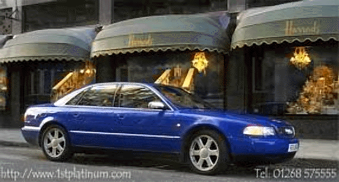
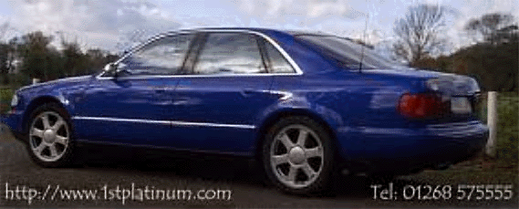

Audi S8


Specs
Price |
$92,000 |
Top Speed |
155mph(electronically limited) |
Acceleration |
|
Engine |
|
0-30mph |
N/A |
Type |
V8 w/Variable length intake manifold, 30valve DOHC |
0-60mph |
5.2sec? (was 5.5) |
Displacement |
4.2L(4172cc) |
0-100 |
N/A |
Power |
360hp@7000rpm |
1/4 mile |
N/A |
Torque |
317lbs-ft@? |
Weight |
3,792 lbs |
Handling |
|
Gas mileage |
|
Skidpad |
.79g(regular A8) |
City |
17mpg |
600ft slalom |
62.3mph(Regular A8) |
Highway |
25mpg |
Powertrain |
6 speed manual,front engine,All wheel drive |
(? = incomplete data or unverified info, N/A = info Not Available)
Beyond the specs:
When the A8 came out it was obviously the best luxury sedan in the world (if you ignore the price tag); although now being challenged by the Mercedes S-Class (its only challenger) it is still one amazing car. With a little engine tuning, the A8 luxury sedan was transformed into the very fast S8 sports sedan. Unlike its competitors, it offers you the space of Audi flagship vehicle (the A8) with performance that can compete with even the most expensive of sports sedans. The A8 already very responsive, but this cars increased compression ratio (along with other modifications) sharpened those responses and gave the car exhilarating performance. This car comes with Audi level quality, refinement, pure ingenuity, and of course the best luxury available (short of a Rolls Royce) at the time. It has a relatively light (compared to the BMW 7 series and Mercedes S class) weight from it is aluminum space frame and in my opinion is the best looking sedan despite being a bit conservative. (Look carefully and you will see its beauty too.) This car is a marvel, and proof of that is shown by how many magazines gave it rave reviews when it first came out. Best of all the S8 comes with Audi's famous AWD system that provides excellent traction as the remarkably successful A4 BTCC racecar (It was banned due to the unfair advantage its AWD gave it) has shown in British Touring racing. This car is perfect for those who want the most room, the best luxury, the highest level of refinement, and performance you can get all in one a sedan at this price.
~Oracle